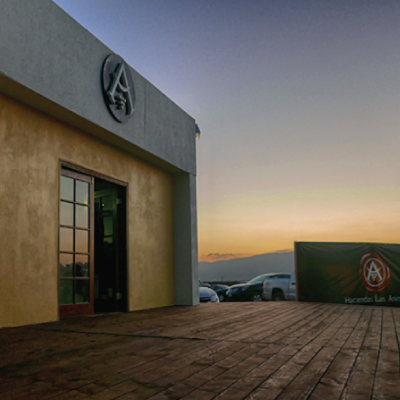
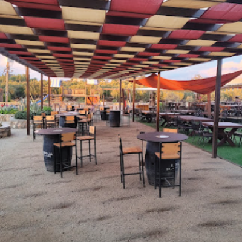
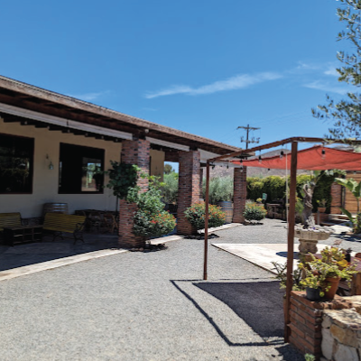
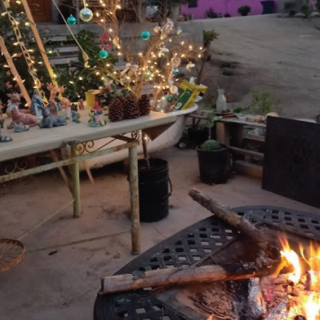

PLACES TO SEE
PLACES TO SEE
Places of Interest around the area
For your convenience, we've listed nearby restaurants and bars below. Simply click on them to open Google Maps and get directions. Enjoy exploring the local dining scene!
RESTAURANTS
BARS & WINERIES
 Vinícola Bajalupano
Vinícola Bajalupano
Carretera Francisco Zarco Km 3.6 Ejido El Porvenir, 22755 Ensenada, B.C.

Cava Las Animas de la Vid
Parcela 49 G Camino Vecinal Francisco Zarco km 83 Ensenada-Tecate Valle de Guadalupe, 22710 Ensenada, B.C.

Corona del Valle
Carretera Tecate-Ensenada KM 89 +100, 22760 Francisco Zarco, B.C.

Vinos Lechuza
Carretera Tecate-Ensenda Km 82.5, Valle de Guadalupe, Francisco Zarco, B.C.

The Heaven & Hell
22766 Ensenada, Baja California
Cavas Sol Y Barro
México 3 Supermanzana Km 87, 22755 El Porvenir, B.C.